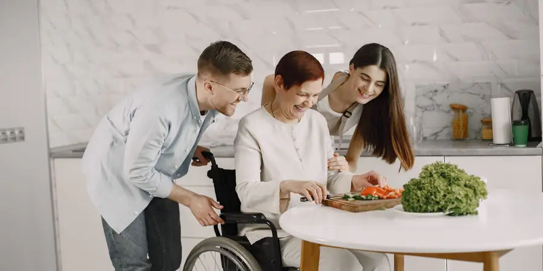
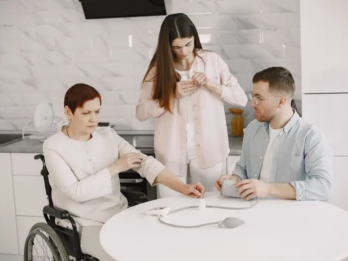

Home Services
NDIS support services in Sydney
We offer four kinds of disability support for NDIS participants across Sydney. Each one is tailored to the person, and you can combine them in one plan.

Health assistance
Staying well takes effort, and you don't have to manage it on your own.
We support you with the health-related parts of your day, in a way that fits your routine, your goals and your NDIS plan.
This can include:
- Support to keep up the health routines that are part of your plan
- Help getting ready for appointments
- Keeping your family or support team in the loop, with your permission

Home care
Home should feel safe and comfortable.
We help with the jobs that keep your home running, so you can spend your energy on the things you enjoy.
This can include:
- Help with household tasks around your home
- Keeping your space safe, tidy and easy to move around
- Support that follows your routine and the way you like things done

Support with daily personal activities
Everyday routines are personal.
We help with them respectfully and at your pace, building on what you can already do, so you keep as much independence as you want.
This can include:
- Help with personal routines, such as getting ready for the day
- Support at the times of day that suit you
- Care that respects your privacy, dignity and choices

Community participation
Being part of your community matters.
We support you to get out, join in and enjoy the community events and activities you care about, with someone you trust beside you.
This can include:
- Going to community events and activities
- Trying a new interest, or getting back to an old one
- Building confidence when you're out and about

Every service starts the same way
Whichever support you choose, we begin by understanding you. Then we plan together, and we keep adjusting as your needs change.
We assess your needs
A conversation about your needs, your abilities and what you'd like help with.
We create your support plan
A plan tailored to you, that fits your routine and your NDIS plan.
We adjust it as things change
We review your support and update it whenever your needs change.
Not sure which support you need?
Tell us about your week and what you'd like help with. We'll suggest options that fit you.